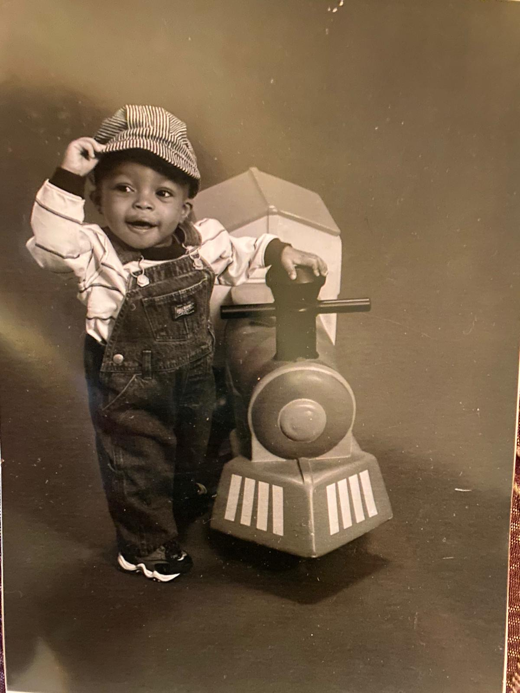

About Me
Some information on me: I am Nigerian-American -- born to Nigerian immigrant parents and I wholly
identify with both aspects. I currently study Computer Science at Xavier University of Louisiana, a
Private Catholic HBCU in New Orleans, Louisiana. Some of my summer goals include learning how to do a
backflip, getting in the best shape of my life, and learning Japanese (also on Duolingo).
Miscellaneous facts:
I lived in Dhaka, Bangladesh
I speak 3 languages - English, Igbo, and Spanish
